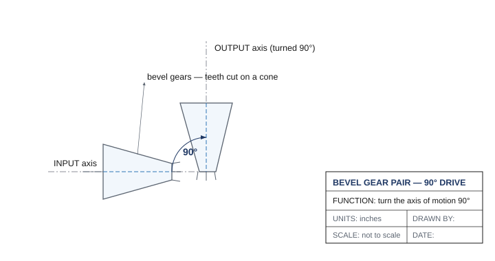

One chapter back, in one breath
Chapter 3 gave you the engine of this whole unit: the gear ratio is driven teeth : drive teeth, a number bigger than 1 means gear down (slower, more torque), a number less than 1 means gear up (faster, less torque), and torque and speed always trade — you never get both. This chapter takes that one idea and pushes it three steps further: what happens with a gear in the middle, what happens when you stack gear trains, and which type of gear to reach for. If "driven over drive" doesn't feel automatic yet, flip back — everything here is built on it.
The idler gear: it does nothing (to the ratio)
Put a third gear between the drive and driven gears, in the same line, and something feels like it should change. It doesn't — at least not the ratio. A gear in the middle is called an idler gear, and here's the rule that surprises everyone:
Only the first gear and the last gear set the ratio. Any gears between them — no matter their size, no matter how many — just pass the motion along. Their tooth counts cancel out completely. A 12T idler and a 60T idler in the same spot give the exact same output speed.
Watch it cancel. Say a 24T drive turns a 36T idler, which turns a 60T driven gear. Work it stage by stage: stage one is 36:24, stage two is 60:36. Multiply them — that's how you combine stages, which you'll use constantly in a moment — and the 36 is on top once and bottom once, so it cancels: (36 × 60) / (24 × 36) = 60/24 = 2.5. Same 2.5:1 you'd get if the idler weren't there at all.
So why use one? Two real reasons, and your kit's gears make both come up:
- To bridge a gap. Your drive and driven shafts are too far apart for two gears to mesh. Drop an idler between them and they connect — without touching the ratio.
- To flip direction. Remember meshed gears turn opposite ways. Each gear in the line reverses the spin again, so an idler lets you make the output turn the same way as the input when your design needs it. (Counting tip: an odd number of gears in the line → input and output spin the same direction; an even number → opposite.)
Compound gear trains: multiplying the trade
An idler can't change your ratio — so how do you get a big ratio? Your EXP kit tops out at 60T. The largest single-stage reduction you can build is 24T → 60T, which is only 2.5:1. For an arm lifting something heavy, you may want far more torque than that. The answer is compound gearing.
The trick is to break the "idler" — to make the middle gear actually do something. In a compound train, two gears share the same shaft, locked together so they spin as one. The big gear of stage one and the small gear of stage two ride that shared shaft. Now the middle tooth counts don't cancel, and the stages multiply:
total ratio = (stage 1 ratio) × (stage 2 ratio)
So two stages of 24T → 60T give you 2.5 × 2.5 = 6.25:1 — two and a half times the reduction a single pair could reach, in a package that still fits on a baseplate. Add a third identical stage and you'd be at 2.5 × 2.5 × 2.5 ≈ 15.6:1. That's the power of compounding: small stages, multiplied, reach huge ratios. The price is a little efficiency — every extra mesh adds friction — so you use the fewest stages that get the job done.
🧮 Worked example — read it twice
Straight from your kit: a motor drives a 24T gear meshed to a 48T gear; on that same shaft, a 24T gear meshes a final 60T gear on the arm.
Stage 1 = 48:24 = 2:1. Stage 2 = 60:24 = 2.5:1. Total = 2 × 2.5 = 5:1 — the motor turns 5 times for one slow, powerful turn of the arm. Notice the two stages don't have to match: you multiply whatever each stage is. That's how a small motor lifts a heavy load — and every gear here is one you can pull from your own EXP kit.
Not all gears are spur gears: the five types in your kit
Until now "gear" has meant the flat, round spur gear. But your EXP kit holds several gear and sprocket types, each solving a problem spur gears can't. Know what each is for:
| Type | What it looks like | What it's for | The catch |
|---|---|---|---|
| Spur gear | Flat disc, straight teeth around the edge (your 24/36/48/60T) | The everyday choice — drivetrains, arms, any ratio on one flat plane. Most efficient and simplest. | Both gears must sit on the same plane, a fixed distance apart, perfectly lined up. |
| Sprocket & chain | A toothed wheel gripping a chain of snap-together links (your kit's High Strength sprockets come in 6, 12, 18, 24, and 30 tooth) | Sending power across a distance — link two wheels on one side of a drivetrain. Shafts can be any distance apart. | Chain can slip or stretch under heavy load. Sprockets on the chain spin the same direction (unlike meshed gears). |
| Bevel gear | A cone with teeth — like a spur gear cut at an angle | Turning a corner: sending rotation around a 90° bend, from a horizontal shaft to a vertical one. | Less efficient than spur gears; used on lighter mechanisms. |
| Worm & wheel | A spiral-threaded screw (the worm) turning a spur-like wheel | Huge reduction in one step, plus it won't back-drive — the load can't spin the motor backward. Perfect for a lift that must hold its height. | One-way only (you can't drive it from the wheel), and the sliding contact wastes energy as heat. |
| Rack & pinion | A round gear (the pinion) on a flat, toothed bar (the rack) | Converting rotary motion into straight-line (linear) motion — the basis of a claw, a slider, or car steering. | Travel is limited by the length of the rack. |
Two of these deserve a closer look, because they do things that feel like magic until you see why.
The worm gear's superpower. A VEX worm is single-start — one spiral thread. Each full turn of the worm advances the wheel by exactly one tooth. So a 24-tooth worm wheel needs 24 turns of the worm for one turn of the wheel — a 24:1 reduction from a single pair, in a space where spur gears would need a tall compound stack. And because the spiral pushes the wheel easily but the wheel can't push the spiral back, a worm drive self-locks: cut power and the mechanism stays put. That's why a worm-driven arm holds its position with the motor off, while a spur-geared arm sags. The cost is efficiency — all that sliding rubs away energy as heat — so you trade efficiency for holding power and compactness.
The rack and pinion changes the kind of motion. Every gear train so far gave rotary-in, rotary-out. The rack is a gear unrolled into a straight bar: as the round pinion spins, it walks itself (or the rack) along in a straight line — rotary becomes linear. This is the one mechanism in your kit built to change the type of motion, and it's how you'll make something open, close, or slide.
📐 See it in CAD — turning the corner 90°
Here's a bevel pair drawn as an engineer would show it: two gears with teeth cut on a cone, their shafts meeting at a right angle. The whole point is in the dimension — the 90° between the input and output axes. This is the drawing you'd hand someone so they mount the two shafts square to each other.

In Onshape (free for schools) you can drop in the VEX bevel gears and the gearbox bracket and watch the corner turn in 3D before you build it. You don't have to model it to finish the chapter — but seeing the assembly makes the mesh and spacing obvious. Browse parts in the VEX CAD library.
📚 Learn more — VEX Library
- Using Gear Ratios with the V5 Motor — 3D builds of simple, idler, and compound gear trains, plus the "idlers don't change the ratio" rule. Heads-up: it's the V5/competition page and uses 12T and 84T gears (see the V5 note above) — build the same ideas with your 24/36/48/60T EXP gears.
- Overview of EXP Chains and Sprockets — your kit's sprocket sizes and chain, and why sprockets on a chain spin the same direction (unlike meshed gears).
- Using Gears, Chain & Sprockets, and Pulleys — why an idler reverses direction, why sprockets spin the same way, and how to pick gears vs. chain vs. belt for a job.
- Engineering 101: Gears and Mechanical Advantage — 📺 a hands-on video of gearing up vs. down with real gears.
🏆 Also on the V5 competition team?
The V5 kit includes 12-tooth and 84-tooth spur gears that reach a 1:7 reduction in a single stage — something your EXP gears (24/36/48/60T) can't, which is exactly why you reach big ratios by compounding. The gear math is identical; only the available tooth counts differ. (Per Your build constraints below, build class projects from the EXP kit — but it's worth knowing both systems if you compete.) Explore the V5 parts in the V5 VEX Library.
The mechanism chart: every mechanism, on one page
Engineers keep a mental table of what each mechanism can and can't do. As you build this week, you'll fill in your own — asking five questions of each mechanism. Here's the row you already know, as a model:
| Mechanism | Can increase speed? | Can increase torque? | Power reversible? | Changes motion type? | Real-life example |
|---|---|---|---|---|---|
| Simple gear train | Yes | Yes | Yes | No | Drivetrains, clocks |
| Worm & wheel | No | Yes | No (self-locks) | No | Lifts that must hold |
| Rack & pinion | — | — | Yes | Yes (rotary→linear) | Car steering, claws |
Notice how the questions expose each mechanism's personality: a worm wheel trades away reversibility to gain holding power; a rack and pinion exists precisely to change motion type. Filling in the rest — bevel, chain, belt, crank-and-slider, cam — is your job on the worksheet.
📐 Your build constraints
Every engineer designs within limits — a budget, a deadline, a space the result has to fit into. This course has two, and they apply to every build, all year:
1 · Build from the EXP kit. Design every build using the parts in your EXP kit's bins. Many parts — the metal beams, the Smart Motor, the High Strength gears, sprockets, and chain — are shared with the V5 competition system and are physically interchangeable, so "EXP vs. V5" isn't about whether a part fits. It's about which bin it comes from: build only from the EXP supply so the competition team's V5 kits stay complete.
2 · It has to fit the cubby. Your whole build — robot plus its parts — must fit inside one storage cubby: about 33 × 33 × 39 cm (roughly 13 × 13 × 15 in). Design compact, and at the end of each project you'll break the build down to store it. This is a normal engineering constraint — real robots have to fit a chassis, a shipping box, or a competition's size box.
What you'll need
- VEX EXP gears (24T, 36T, 48T, 60T), at least one worm and a worm wheel, bevel gears, a rack and pinion, sprockets and chain
- Shafts, bearing flats, shaft collars, spacers, and a C-channel or flat-bar baseplate to mount on
- A hand crank (or a free shaft to turn by hand)
- Engineering notebook; optional: one EXP Smart Motor to drive a train
Do it
- Inventory your gears. Lay out the 24/36/48/60T spur gears and count the teeth on each to confirm the numbers — you'll trust them all week.
- Build a simple pair and verify it. Mount a small drive gear meshed with a larger driven gear. Mark a tooth on each with tape. Turn the drive exactly 5 full turns and count the driven turns. Does turns in ÷ turns out match the ratio you calculated from tooth counts?
- Add an idler — and watch it not matter. Insert a third gear between them. Predict the new ratio (trick question), then re-run the 5-turn test. Note which direction the output now spins.
- Compound it. Build a two-stage train with a shared middle shaft. Predict the overall ratio by multiplying the stages, then measure it by counting turns. Record predicted vs. measured.
- Meet the special gears. Build (or examine) a worm & wheel and feel that you can't back-drive it; build a rack & pinion and watch rotary become linear; build a bevel pair and watch power turn a 90° corner.
- Fill in the mechanism chart on your worksheet for every mechanism you built.
Check your understanding
- A 12-tooth driver turns a 36-tooth driven gear. What is the gear ratio, and does this gear up or down?
- You need a robot arm to lift a heavy load slowly and steadily. Gear up or gear down?
- A 24T gear drives a 48T idler, which drives a 60T gear. What is the overall ratio — and what did the idler change?
- Build a compound train from your kit's gears that reaches a reduction of at least 6:1. List the gears in each stage and show the multiplication.
- Your robot's arm needs to hold its position when the motor is off, or it sags. Which gear type solves this, and why?
- You want a claw that opens and closes in a straight line. Which mechanism converts the motor's rotary motion into that linear motion?
Key terms
Sources (VEX Library, kb.vex.com / pd.vex.com): Using Gear Ratios with the V5 Motor; Overview of EXP Chains and Sprockets; Engineering 101: Gears and Mechanical Advantage (video). Gear-type background adapted from G. Gillard, Gears and Sprockets for Basic Robotics (2016). Kit gear counts per the PLTW Gateway VEX EXP custom kit (270-8867) bill of materials.